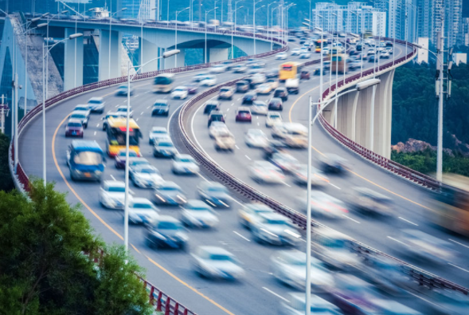
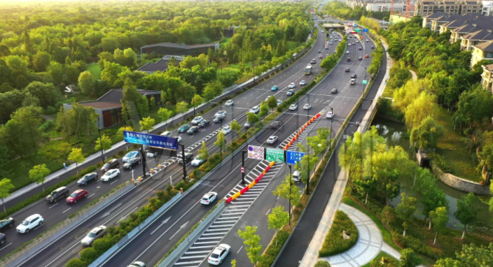

功能介绍
车辆检测与追踪
检测图像中的所有车辆，识别每辆车的类型和坐标位置，根据
连续的视频图片序列，跟踪车辆轨迹。
连续的视频图片序列，跟踪车辆轨迹。
动态车流量统计
在原图中划分区域，根据车辆轨迹判断驶入/驶出区域的行为，
统计各类车辆进出区域的数量。
统计各类车辆进出区域的数量。
车辆行为预测
联系各种因素，对车辆行为进行判断与预测行驶情况来及时发
现并干预不良的驾驶行为（如车辆偏道、车辆碰撞等)，避免可
能造成的交通危害。
现并干预不良的驾驶行为（如车辆偏道、车辆碰撞等)，避免可
能造成的交通危害。

行人流量检测与追踪
检测图像中的行人，识别行人的坐标为之，根据连续的视频图片
序列，跟踪行人运动轨迹。
序列，跟踪行人运动轨迹。
行人流量统计
在原图中划分区域，根据行人运动情况，统计行人进出区域的数
量。
量。
应用场景
车辆路况分析
实时监控交通道路、卡口的车流量，自动统计不同时段各类车辆的进出数量，分析路口、
路段的交通状况，为交通调度、路况优化提供精准参考依据。

路段的交通状况，为交通调度、路况优化提供精准参考依据。
车辆规避事故
结合多种因素，对车辆行驶行为进行判断与预测行驶情况，及时发现并干预不良的驾驶行
为，避免可能造成的交通危害。

为，避免可能造成的交通危害。
行人流量分析
实时监控交通区域人数流量，统计不同时段的人数。
功能展示
判断视频中的各物体的类型，并对其进行分类统计，同时，统计各物体的行进方向并进行一定量的预判；当发生车辆碰撞时进行报警等功能。